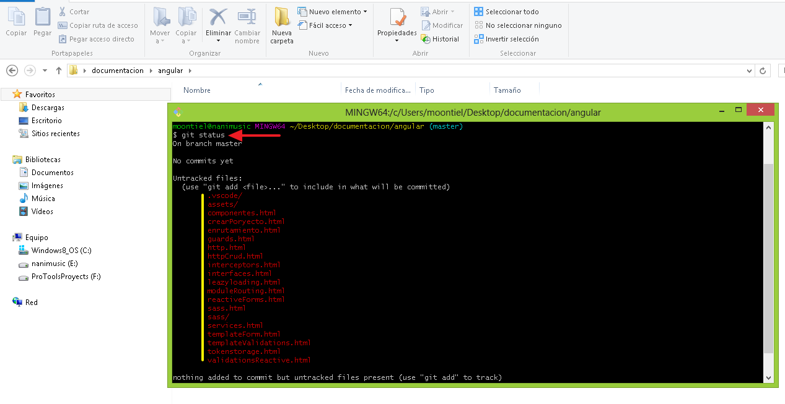
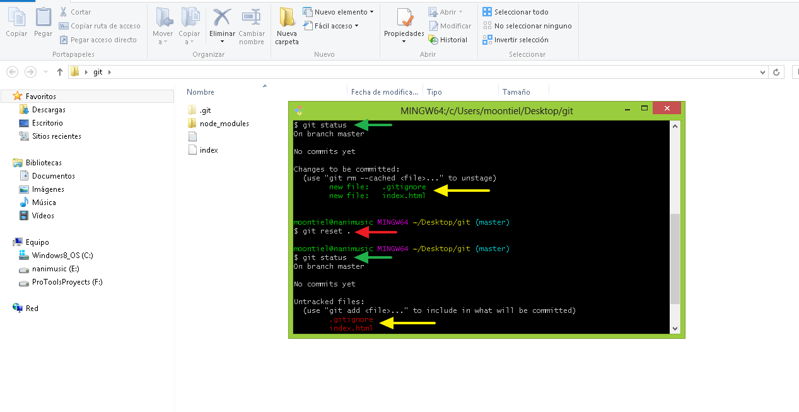
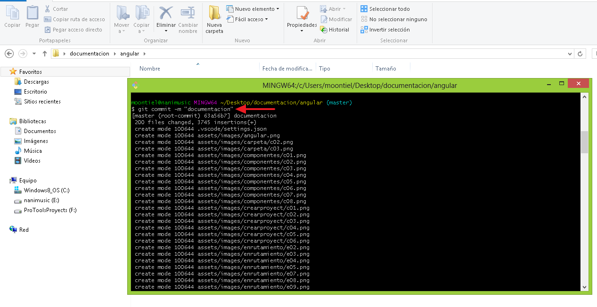

01. Git
Veamos como subir nuestro proyecto a un repositorio local con git haciendo uso de la consola git bash
01. Git bash y la carpeta contenedor

02. Git init: Iniciando con git

03. Git status: Estado de los archivos

04. Git diff: Muestra los cambios por consola
05. Git add .: Añade los archivos al stagin area

06. Git reset .: Remueve los archivos del stagin area

07. Git commit -m "text": Descripcion del commit

End Git